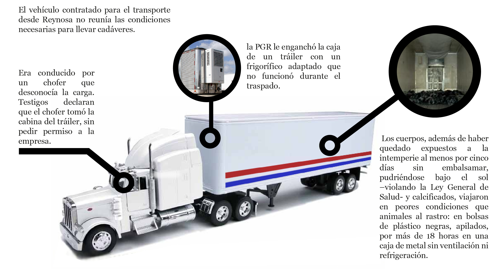
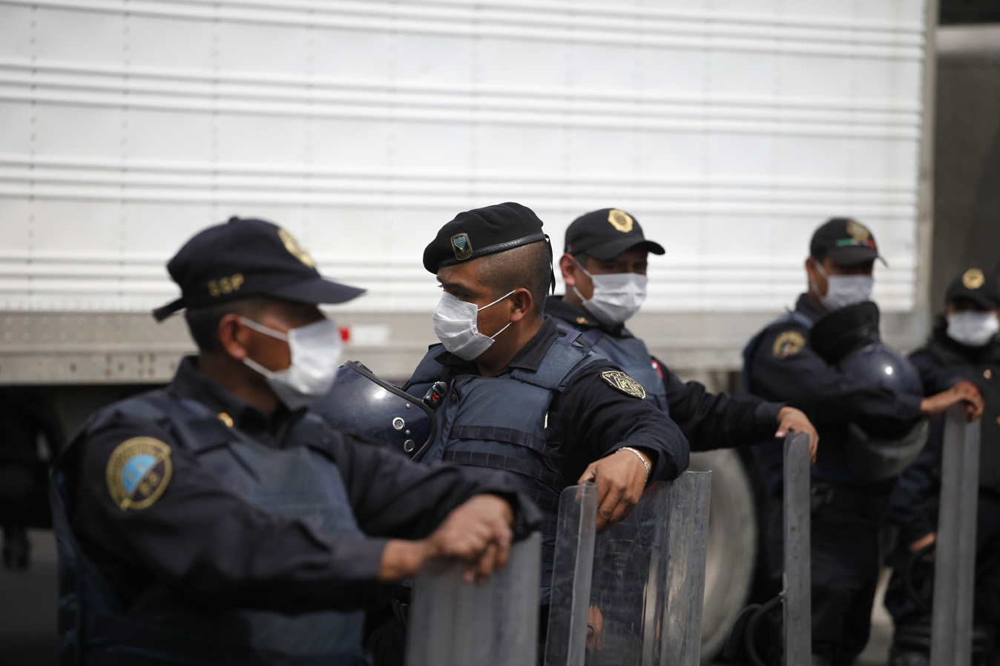

Movimientos de los Cuerpos
2010
Honduras
1 de Septiembre 2010
Después de las autopsias, personal ministerial de la Procuraduría General de
Justicia de Tamaulipas entregó a las autoridades consulares de Honduras los cuerpos
de 16 migrantes que, aseguraban, correspondían a ciudadanos de ese país, aunque no
se sabe cómo fueron identificados ya que una semana es poco tiempo para obtener resultados
de pruebas de ADN. Además, la cal borronea los rasgos, seca los cuerpos.
Aunque algunos migrantes llevaban alguna identificación en la ropa no se
dejó asentada qué pertenencias correspondían a cuál cadáver. Las consecuencias pronto se dejaron ver.
La opción más probable de esta entrega –que no especifica la CNDH--
es que una representación hondureña se trasladara hasta Reynosa para seguir el protocolo de entrega.
El 1 de septiembre, 16 cuerpos fueron repatriados a Tegucigalpa en un avión de la Fuerza Aérea Mexicana;
según la reconstrucción de la CNDH, solo había 14 hondureños identificados para ese día.
El documento habla de la entrega en esa misma fecha de dos cuerpos directamente “a sus familiares”.
El documento no aclara de qué nacionalidad eran esos dos cuerpos entregados a su familia en México y
por qué a Tegucigalpa volaron en total 16 cuerpos identificados como hondureños.

Repatriados
- Julian Sánchez Benítez
- Milton Mateo Alvarado Villanueva
- Sabás Ramón Oliva Romero
- Carlos Alberto Valle Lazo
- Jorge Alberto Salgado Bustillo
- Víctor Manuel Escobar Pineda
- Pedro Antonio Rubio García
- Miguel Ángel Cárcamo Ávila
- Cantalicio Barahona Vargas
- Brian Ariel García Ferrera
- Julian Adolfo Chirinos Padilla
- Junior Basilio Espinoza Valerio
- Jorge Alberto Osorto Sevilla
- William Giovany Cortez Benites
- Misael Castro Bardales, viajó sin papeles confundido por Carlos Alejandro Espinoza.
- Edilsimar Junior Faustino da Silva
Una vez en Tegucigalpa, las autoridades de ese país ordenaron a las familias no abrir los féretros
que les entregaban por cuestiones sanitarias, les exigieron que confiaran en que estaban recibiendo
el cuerpo correcto, aunque no les entregaron pruebas de la supuesta identificación. En algunos casos
les permitieron ver un video donde se veían los cuerpos tirados, lo que no constaba como prueba de
que el que estaba en el féretro era el familiar. Este fue también la solicitud hecha a todas las
familias de las víctimas de todos los países. En Guatemala y El Salvador, principalmente, las familias
señalan que los ataúdes iban sellados y que militares vigilaban que ninguno fuera abierto. Pero no
todos hicieron caso: de los 16 cuerpos que llevados a Honduras, sólo 12 fueron aceptados por sus parientes
y trasladados a sus lugares de origen, los cuatro cuerpos restantes fueron rechazados porque los familiares
no reconocieron a las personas que llevaban. El Servicio Forense de Honduras tuvo que albergar
a los desconocidos. Cuatro cuerpos quedaron en la morgue es pausa. Dos de esos cuerpos enviados
por la procuraduría de Tamaulipas habían llegado a la familia equivocada.
Una semana después, el 8 de septiembre, el cadáver de Misael Castro Bardales, que
había sido repatriado bajo el nombre de Carlos Alejandro Espinoza, fue identificado
por su hermana como su familiar. Daysi Castro lo reconoció por tres de sus tatuajes
(uno eran las letras de sus iniciales, otro su apodo); posteriormente su identidad la
confirmaría el cotejo de huellas dactilares en el Registro Nacional de la Personas.
El 15 de septiembre, tras dos semanas de análisis, el canciller de Honduras entregó
los cadáveres de Jorge Alberto Osorio Sevilla, de 30 años, y de William Giovani Cortez
Benitez, de 22, a sus respectivas familias.
31 de agosto de 2010
El otro cuerpo enviado por error a Tegucigalpa correspondía a un ciudadano brasileño Edilsimar Junior Faustino da Silva, quien fue repatriado con el nombre del hondureño Eredis Ayala Muñoz, mientras los familiares de Edilsimar recibían en Brasil un ataúd sellado y la orden de no abrirlo, pero al desobedecer a las autoridades, no encontraron un cuerpo sino una bolsa llena de arcilla. Además del error, las autoridades mexicanas querían cobrar a la familia de Edilsimar 180 mil pesos por el costo del traslado. El cuerpo del brasileño Edilsimar permaneció en Tegucigalpa, hasta donde tuvieron que llegar peritos de Brasil, quienes lo identificaron plenamente. Edilsimar fue repatriado nuevamente, ahora de Honduras a Brasil en noviembre, tres meses después de la masacre.
Traslado Terrestre a la Ciudad de México
31 de agosto de 2010
Los 56 cuerpos que el gobierno de Tamaulipas no pudo identificar, ya bajo custodia tardía de la PGR, fueron trasladados en un tráiler a la Ciudad de México la noche del 31 de agosto al 1 de septiembre. Bajo el resguardo de las autoridades federales y con la mirada internacional encima por la masacre que conmocionó al mundo, el manejo de los cuerpos bajo resguardo federal no fue mejor que en Tamaulipas.

El chofer, un joven inexperto y desconocedor del DF, justo antes de llegar a las instalaciones del Servicio Médico Forense del Tribunal Superior de Justicia del Distrito Federal, rozó con la caja del tráiler un automóvil estacionado que, a su vez lanzó a otro automóvil contra la banqueta, repleta de peatones. En el accidente una transeúnte perdió una pierna y evidenció las condiciones en las que los cuerpos de los migrantes asesinados habían sido trasladados.
Tanto deterioro de los cuerpos, además de violentar la dignidad de las víctimas, provocó de nueva cuenta pérdida de evidencia forense que hubiera facilitado la identificación de las víctimas.
Los cadáveres permanecieron de nueva cuenta apilados a la intemperie, mientras eran llevados del tráiler a la funeraria particular, La Piedad, en la colonia Doctores, contratada por la PGR para el servicio de embalsamamiento. Unas nueve horas después del choque la totalidad de los cuerpos fueron ingresados al Servicio Médico Forense del Distrito Federal. Desde ese momento hasta la actualidad han sido repatriados, en distintas fases, 44 cuerpos.

AP/Eduardo Verdugo